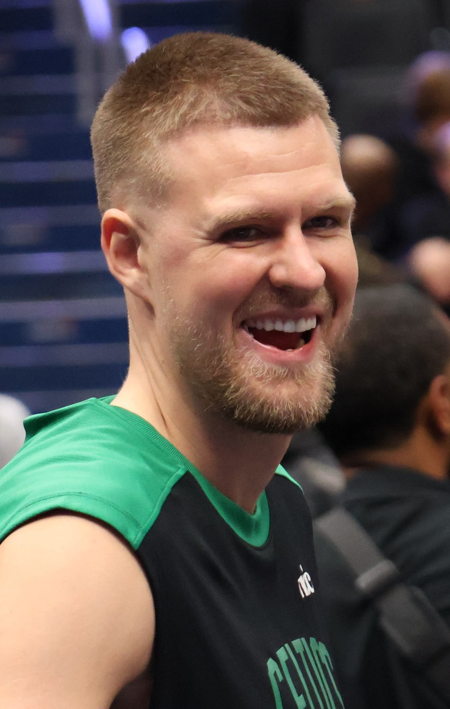
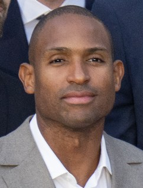

The Warriors Depth Chart for 2026-27, Position by Position
The projected starting five, the bench behind it, the two knees that decide the season, and the spots where this roster is genuinely thin.

Here's the Warriors depth chart for 2026-27 as it stands in the middle of August, with camp still weeks away and the opener set for 21 October in Los Angeles. Steph Curry, Brandin Podziemski, Gui Santos, Draymond Green and Kristaps Porzingis project as the starting five. Al Horford, De'Anthony Melton, Gary Payton II and Will Richard are the veteran bench. Yaxel Lendeborg is the rookie. And the two players who would redraw every line of this chart, Jimmy Butler and Moses Moody, are both coming back from knee surgery.
| Position | Starter | Second | Third |
|---|---|---|---|
| Point guard | Stephen Curry | De'Anthony Melton | Gary Payton II |
| Shooting guard | Brandin Podziemski | Will Richard | Moses Moody (rehab) |
| Small forward | Gui Santos | Jimmy Butler (rehab) | Lajae Jones |
| Power forward | Draymond Green | Yaxel Lendeborg | Gui Santos |
| Centre | Kristaps Porzingis | Al Horford | Charles Bassey |
Why the starting five looks like that
Read that lineup twice, because the two names most people expect to see aren't in it. Butler is the second best player on this roster when he's upright and he isn't going to be upright in October. He tore the ACL in his right knee on 19 January at Chase Center against Miami, of all opponents, and had surgery on 9 February. The realistic target for a player of his age coming off that operation is somewhere around midseason, which is roughly what the front office has been signalling all summer. February is a reasonable bet. November isn't.

Moody is the other one. He tore the patellar tendon in his left knee against Dallas on 23 March, which carries a nine to twelve month recovery, and the update out of his rehab in the Bay is that he hoped to be running and doing on court work by September. That's encouraging for March, not for opening night. Put him down as a second half addition and be pleasantly surprised if it comes sooner.
Guard
Curry is thirty-eight and still the entire centre of gravity of this offense, which is both the best thing about the roster and the most uncomfortable sentence anybody in this fan base has to say out loud. Everything the team does well starts with two defenders chasing him around a screen. The numbers are on the Curry records page, and they're still moving.
Podziemski has grown from a curiosity into an actual starting guard, and he's the one young player on this roster the coaching staff has trusted without needing to be argued into it. Melton and Payton were both brought back on 1 August, which tells you exactly how the front office feels about continuity right now. Payton is thirty-three and still the best point of attack defender on the team. Will Richard inherits the backup wing minutes that used to belong to Moody.
Wing
This is the thin spot, and it's thin because of a trade. Jonathan Kuminga and Buddy Hield went to Atlanta at the deadline for Porzingis, which fixed the centre position and emptied the wing. Gui Santos starting for a team with this payroll isn't a plan anybody drew up in June, it's what's left. Santos plays hard, cuts well and doesn't need the ball, and if this season goes right he's the seventh best player on a healthy roster rather than the third best on this one. How the staff handled Kuminga on the way out is its own argument, and we've made it more than once.
Big
Porzingis is the real addition and the reason the deadline trade made sense. Seven foot two, shoots it from range, protects the rim, and arrives with a medical history that includes the POTS diagnosis that cost him most of a season in Boston. He re-signed on 30 June. Horford came back on 6 July, and at forty he's a specific kind of useful: he knows where to be, he can still shoot it, and he doesn't need plays run for him. Charles Bassey is the third centre.


Draymond re-signed on 30 July and remains the player who decides what the defence is capable of. There's no version of a good Warriors defence that doesn't run through him, and there's no version of a calm Warriors season that doesn't depend on his temperament. Both of those things have been true for a decade and neither is changing now.
The rookie and the two way spots
Yaxel Lendeborg came in at eleven in the draft out of Michigan, a six foot nine forward who can handle it a little and guard more than one position. Lajae Jones went at fifty four out of Florida State. Rookie minutes on a team trying to win now are earned rather than handed out, and this staff has a long and well documented history of not developing young players, so temper the expectations for game one and watch what has happened by January.
Who left
Quinten Post signed an offer sheet with Memphis and Golden State declined to match. Pat Spencer went to Phoenix. Nate Williams took a deal in Japan. Kuminga and Hield were gone at the deadline. That's a lot of bodies out of a roster that finished 37-45 last season, took the tenth seed, won its first play in game and then lost to Phoenix to end it.
Where it runs thin
Everywhere behind the top seven. This is a roster with two enormous salaries, a handful of sensible veteran deals, and then minimum contracts and hope. If Curry, Green or Porzingis misses a month there's no replacement on the books, only a redistribution of minutes to players who weren't signed to play them. The cap sheet page goes through why that's, and it isn't an accident, it's the arithmetic consequence of paying two players what this team pays two players.
Steve Kerr signed a new two year deal in May and used forty three different starting lineups last season, which is less a coaching philosophy than a medical report. The chart at the top of this page assumes a healthy October. Nothing about the last two seasons suggests that's the way to bet.

The calendar
Golden State opens on the road at the Lakers on Wednesday 21 October in a national television window, then comes home to Chase Center on Friday 23 October against Memphis. Camp is where the rotation questions get answered, and the rotation is a different question from the depth chart, which is exactly why we split it out into a separate projected rotation page.
This page is a running record and gets updated on every roster move, every injury update and every meaningful change to the pecking order. The bigger argument about where this team is heading is in the season outlook, and the rest of it's on the Warriors hub.
More coverage: Warriors section · Bay Area Sports · Bay Area Sports Blog home